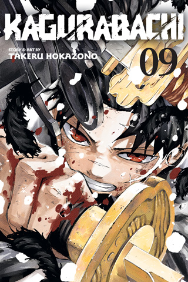

Archive / Collectibles
On the shelf
Collectiblesコレクション
What exists to buy. No bootlegs, no scan listings.



The object to buy is the tankōbon, not a scan. Kagurabachi started in Weekly Shōnen Jump issue 2023 #42 (19 September 2023). Color leads are issue-specific; they do not always reprint. Jump Comics volumes started 2 February 2024 in Japan. As of 1 May 2026 there are 11 Japanese volumes. Volume 12 is listed for 4 September 2026 (ISBN 978-4-08-885177-8) and is expected to close Part 1 and open the war book.
- Jump Comics (Shueisha), Japanese tankōbon. Start ISBN 978-4-08-883819-9 (Vol. 1, Mission). Eleven volumes out; twelfth solicited.
- VIZ Media, English editions from 5 November 2024 (ISBN 978-1-9747-4724-5). Vols. 1–8 have announced dates through August 2026; Vol. 9 is listed 3 November 2026; later volumes TBA.
- Weekly Shōnen Jump, the serialization object. The magazine is how new chapters exist. The volume is how extras exist (bathhouse, memory gag). See volume extras.
- French edition via Kana (noted on Volume 11 promo). Other territorial editions follow local Jump licenses.
ISBNs, chapter maps, and jacket faces live on the volume guide. Jacket studies are a separate page: covers.
Circulation & awards
The print run is the number Shueisha and VIZ keep restating because the 2023 meme made the opposite prediction. Circulation on this site:
- 350,000, July 2024
- 1 million, October 2024
- 2.2 million, May 2025
- 3 million, October 2025
- 4 million+, April 2026
Next Manga Award 2024 in the print category. Nominations: Shogakukan, Kodansha, Eisner (Asia). 2026 Daruma for Best Action Manga. BookScan and New York Times graphic lists in North America from the first VIZ volume. Highest-voted title in a Manga Plus AX poll over Sakamoto Days, RuriDragon, and Blue Box. Those are the plaques. The chapter is still the thing.
Anime object
Cypic. Directed by Tetsuya Takeuchi. Character designs by Keigo Sasaki. Broadcast listed for April 2027. Crunchyroll worldwide, with the exceptions the license announcement listed. Official hub: anime.kagurabachi.jp. Accounts: @kb_anime_jp, @kb_anime_en.
A world-tour first-20-minutes ran from July 2026, Anime Expo, Japan Expo, AnimagiC, Anime NYC, before the broadcast. Any “collectible” from that tour is a ticket and a memory unless a formal booklet is sold. Record the SKU if one appears. Voice credits already on this site: Taihi Kimura (Chihiro), Tomokazu Seki (Kunishige), Katsuyuki Konishi (Shiba). Voiced-comic credits sit on the character pages where they exist.
Figures & merch
Licensed goods track Jump’s usual partners: Jump Shop, volume-launch storefronts, later anime makers. This archive logs official items with release date and manufacturer when they exist. Unlicensed statues and bootleg keychains are not listed. No scan listings. No “replica Enchanted Blades” from a marketplace that does not have a license line. The buying door, VIZ ISBNs, Jump Store, Jump Shop, and how commission actually works, lives on the shop page.
If you want the book, buy the book. Official chapters: VIZ and MANGA Plus.
What to buy in 2026
Japanese Volume 11 is out. Volume 12, 4 September 2026, ISBN 978-4-08-885177-8. VIZ through Volume 8 on shelves or solicited; Volume 9 on 3 November 2026. World-tour tickets for the first twenty minutes are a memory unless a booklet SKU appears. Four million in circulation is the number the meme did not predict. Full dates: publication record. Jackets: covers. Extras: bathhouse and Soya.